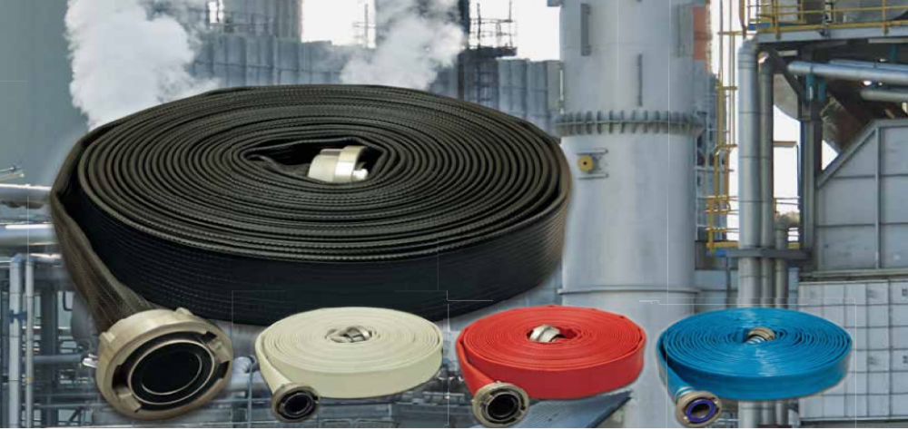
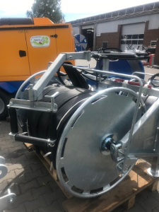

Lay-flat hoses for Mining, Groundwater & Agriculture

The Ohrdrufer hose weaving mill Eschbach GmbH as a fully integrated manufacturer of
lay-flat hoses produces a wide
variety of hose qualities for industry, mining, agriculture, fire fighting and disaster
control on an area of 15,000
square meters. All hoses are manufactured using only the highest quality raw materials
on the latest machines and can be
integrated with all international couplings. With us you will find further special hoses
as well as corresponding
equipment and various accessories - all from a single source

Robust large diameter hoses for emergency dewatering of open-pit mines, tailings dams, basins
Reducing costs for groundwater pumping using single hoses (200m) instead of multiple tube segments
Transfer of potable water, milk and juice for industrial food production
Pumping of slurries with high solid content without internal erosion
Main supply for irrigation systems with UV-resistent hoses made from high performance PVC/Nitril and
polyurethane
Distribution of stillage (refuse) from sugar-alcohol production using extremely robust single (300m) PU hoses
Fire fighting with hoses resistant of up to 900ºC for one hour
Fighting forest fires with specially designed self-wetting hoses